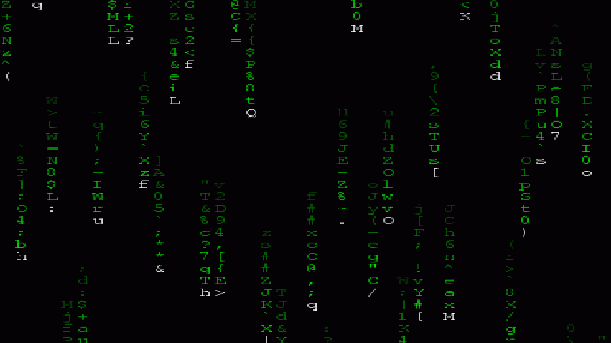

chudel
Strudel in ChucK
Music 220A
Final Project
Brendan Zelikman
Chudel is a ChucKian port of Strudel, a web-based live coding environment that is itself a JavaScript port of Tidal Cycles, an algorithmic pattern language in Haskell.
Mini-Mini-Notation
The foundation of Chudel is a crude and miniature version of Tidal/Strudel's Mini-Notation.
| Feature | Syntax | Example | Audio |
|---|---|---|---|
| Sequences | Space | sound("bd hh sd do") | |
| Rests | Dash or Tilde | sound("bd - sd ~") | |
| Parallel | Comma | sound("bd hh bd hh, sd sd") | |
| Sub-sequences | Square Brackets | sound("bd hh bd [hh hh]") | |
| Sub-sub-sequences | Nested Brackets | sound("bd hh bd [hh [hh hh]]") | |
| Speed Up | Asterisk | sound("bd hh*2 bd*3 hh*4") | |
| Alternate | Angle Brackets | sound("bd hh bd <sd cp>") | |
| Replicate | Exclamation | sound("bd hh!2 sd") | |
| Elongate | At Sign | sound("bd hh@2 sd") |
Chudel API
The Chudel API is centered around the Chudel class which comes with a handful of functions.
| Feature | Syntax | Example (Click to Play!) |
|---|---|---|
| Initialize Class | Chudel | Chudel chudel; |
| Start Clock | run() / loop() | chudel.run() / while (true) chudel.loop(); |
| Play Sounds | sound(string) |
chudel.sound("bd hh sd do");
|
| Play Notes | note(string) |
chudel.note("c4 e4 g4 c5").sound("piano");
|
| Apply Scale | scale(string) |
chudel.note("0 2 4 <[6,8] [7,9]>").scale("C:minor");
|
| Add Offset | add(string) |
chudel.note("0!4").add("1 2 3 4").scale("C:minor");
|
| Change Gain | gain(string) |
chudel.sound("hh*16").gain("[0.3 0.6]*2");
|
| Change Pan | pan(string) |
chudel.sound("cp!3").pan("-1 0 1");
|
| Change Speed | fast(string) |
chudel.sound("bd hh bd hh, - sd").fast("2");
|
| Add Sample | register(key, file) | chudel.register("xd", "special:dope"); |
| Read File | livecode(file) | chudel.livecode("chudel.txt"); |
Musical Demos
Here are some Chudelian originals and covers to showcase different uses of the library.
| Name | Code | Audio |
|---|---|---|
| Cool Beat My Own |
chudel.sound("
[bd bd] <[bd bd] [bd - - bd - - bd <- bd>]>,
[oh - <- oh - oh*2> oh - - oh -]*2,
[- hh]!3 [- hh*2],
[- sd]*4 ");
|
|
| Tetris Theme Strudel's Version |
chudel.note("
<
[e5 [b4 c5] d5 [c5 b4]]
[a4 [a4 c5] e5 [d5 c5]]
[b4 [~ c5] d5 e5]
[c5 a4 a4 ~]
[[~ d5] [~ f5] a5 [g5 f5]]
[e5 [~ c5] e5 [d5 c5]]
[b4 [b4 c5] d5 e5]
[c5 a4 a4 ~]
,
[[e2 e3]*4]
[[a2 a3]*4]
[[g#2 g#3]*2 [e2 e3]*2]
[a2 a3 a2 a3 a2 a3 b1 c2]
[[d2 d3]*4]
[[c2 c3]*4]
[[b1 b2]*2 [e2 e3]*2]
[[a1 a2]*4]
>".sound("bass") |
|
| Sweden (C418) My Simplification |
chudel.note("
[e2 f#2]
[g2 b2]
[a2 g2]
[d2]
,
[e3,g3]
[a3,d4]
[f#3,a3]
[c#4,e4]
[e3,g3,b3]
[a3,d4,f#4]
[f#3,a3,c#4]
[a3,c#4,e4]
,
-!8
[- [a4 b4]]
[- [- [- [d4 e4]]]]
[- [- [- [f#4 a4]]]]
-
[- d5 b4 a4]
[- [- [- [d4 e4]]]]
[- [- [- [a4 f#4]]]]
-
[- [a4 b4]]
[d5 [- [- [f#5 e5]]]]
[c#5 [- [- [d5 c#5]]]]
a4
[- [b4 a4]]
[- [- [- [d4 e4]]]]
[- [- [- [f#4 a4]]]]
").sound("piano") |
Acknowledgments
This project was started based a conversation I had with Rochelle Tham, and I certainly did not anticipate getting as invested as I did. There is still much to be done, but I had to draw the line for now.
Obviously, none of my work would have been possible without the inspiration of Strudel, whose work would not have been possible without the inspiration of Tidal. Thank you to the teams of both and I now realize how much work went into these ridiculously impressive projects.
I adapted this project with the help of Strudel's two (slightly different) technical manuals, found on their website and on their repository. I still have many questions but these carried me all the way.